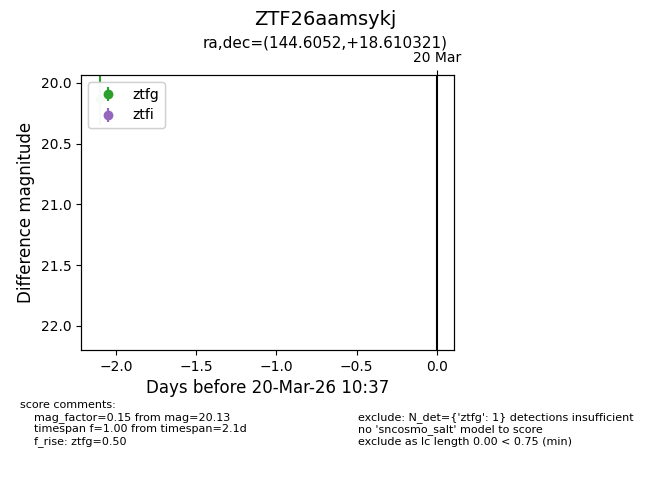
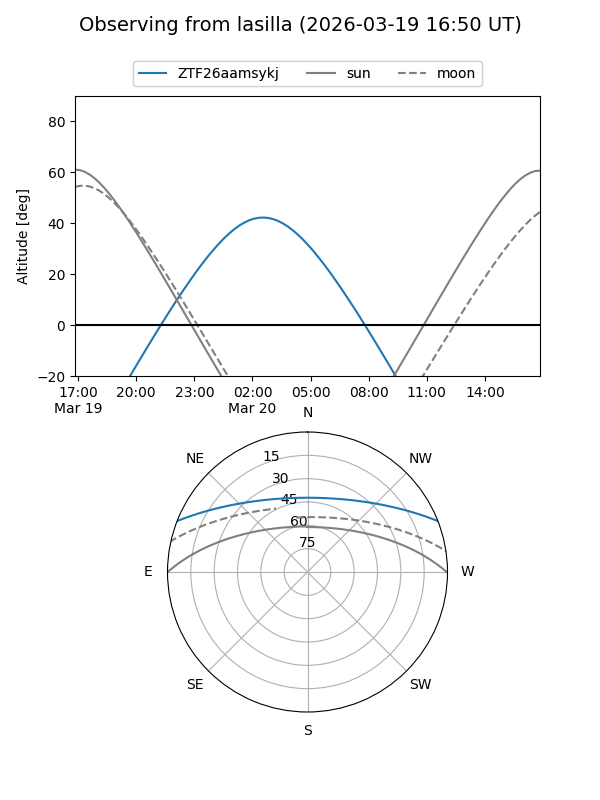
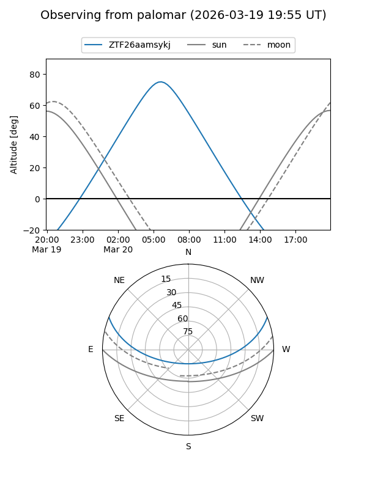

ZTF26aamsykj
Target ZTF26aamsykj at 2026-03-20 10:39
Aliases and brokers:
FINK: link
Lasair: link
ALeRCE: link
alt names
ZTF26aamsykj (ztf,fink_ztf)
Coordinates:
equatorial (ra, dec) = 144.6052,+18.61032
equatorial (HMS+DMS) = 09:38:25.25,+18:36:37.15
galactic (l, b) = (213.2324,+45.00028)
Flags:
Photometry:
last ztfg=20.13
1 ztfg detections
Lightcurve

Visibility


Additional plots